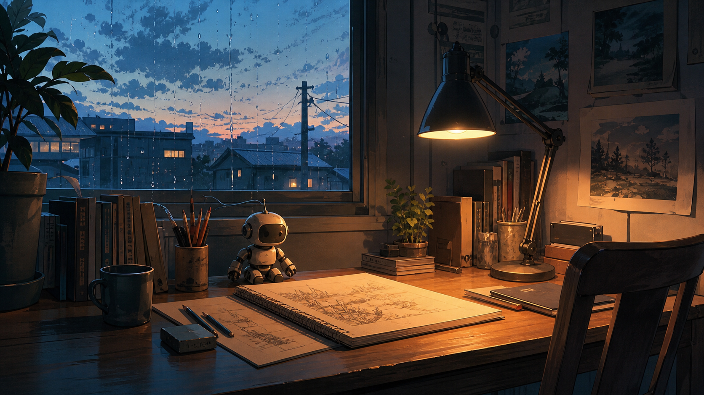

Rainy Evening Study
An original anime-inspired illustration: a quiet desk, a small robot companion, and a rainy evening window.
Side page
A small personal space for visual references, atmospheric scenes, and ideas that sit alongside research and study.

An original anime-inspired illustration: a quiet desk, a small robot companion, and a rainy evening window.
Warm desk lamps, rain on glass, handwritten notes, and small details that make a workspace feel lived in.